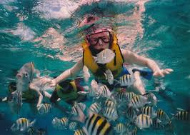

Scuba Diving
If you want to have a pleasant and exotic experience in scuba diving then mexico is your country. Diving under Islah Mujeres water brings you joy and an exotic view of the ocean blue and its under creatures and museums.
ATV Tour and Ziplining
Mexxtremo Adventure tour has the best experts for you and your friends to give an excitted experience in a jungle on ATV four wheel bikes.
Snorkeling
Cozumel is arguably the top spot for snorkeling in all of Mexico, internationally renowned for its crystal clear blue waters and proximity to the Mesoamerican Reef, home to 105 different types of coral and 262 species of fish.
